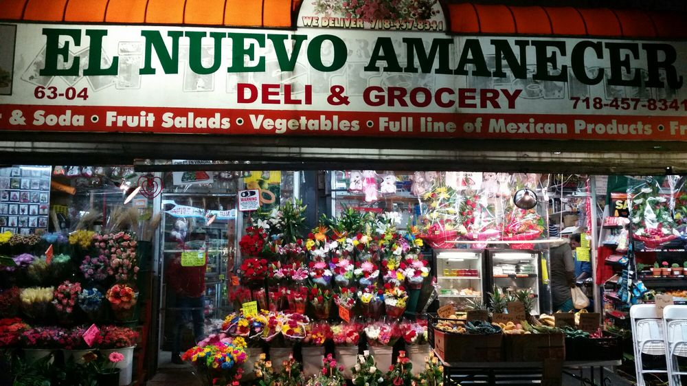
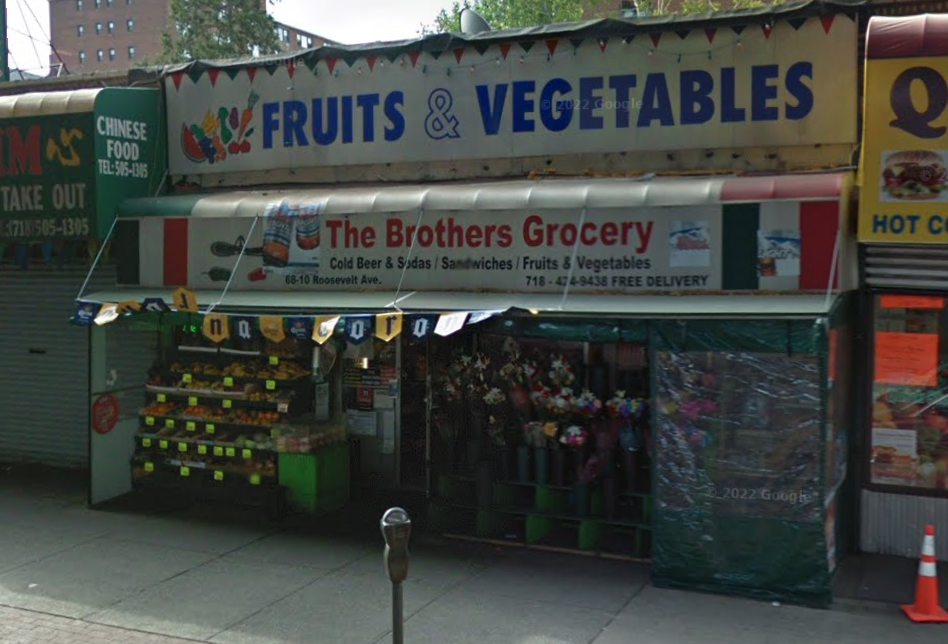

Before & After: Changing Storefronts
Swipe through six businesses to see how gentrification and e‑commerce have reshaped Jackson Heights.

Chong Hap Market
Before
A long‑standing Korean grocery serving fresh produce and homemade staples.

Parking Lot
After
Replaced by a parking lot, removing a community‑serving storefront entirely.

Ajani/Sherpa Deli
Before
A Nepali‑Tibetan deli offering snacks, drinks, and community‑friendly service.

Smoke Shop
After
Converted into a generic convenience store with no cultural identity.

El Nuevo Amanecer
Before
A Latino grocery offering fresh produce and Latin American staples.

Local Chinese Market
After
Chinese Supermarket buys old space and expands next door.

79th Street Deli
Before
A neighborhood deli providing everyday groceries and quick meals.

Smoke Shop
After
Shut down and replaced by a smoke shop, a common neighborhood trend.

84 News Inc & Grocery
Before
A small grocery and newsstand serving local families for years.

Choco Loca
After
Closed and replaced by a construction site, later becoming a café.

The Brothers Grocery
Before
A Mexican‑owned corner store known for affordable essentials.

Sariling Atin
After
Replaced by a Filipino market, shifting but not erasing cultural presence.